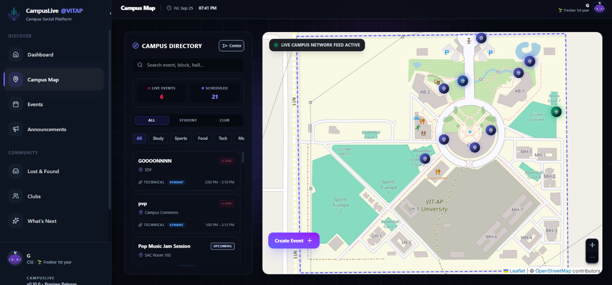
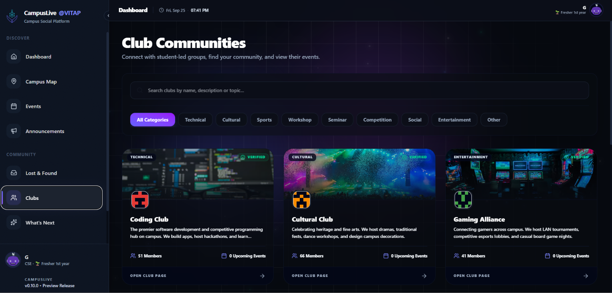
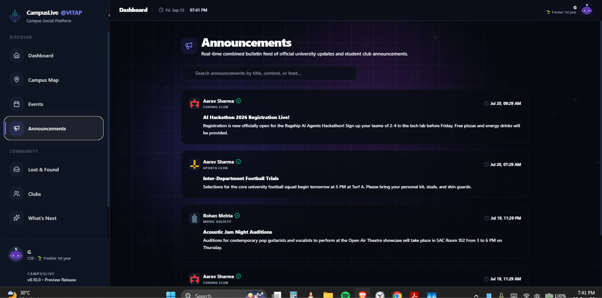
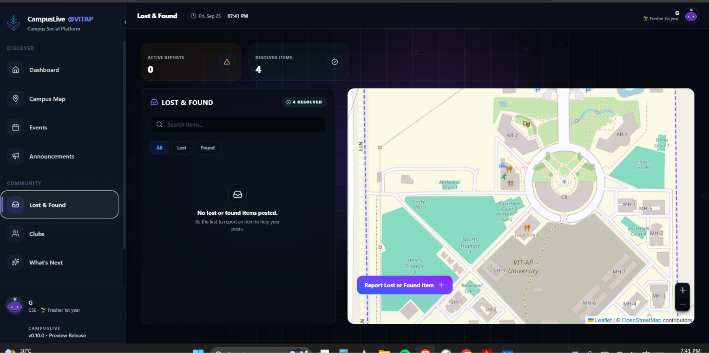
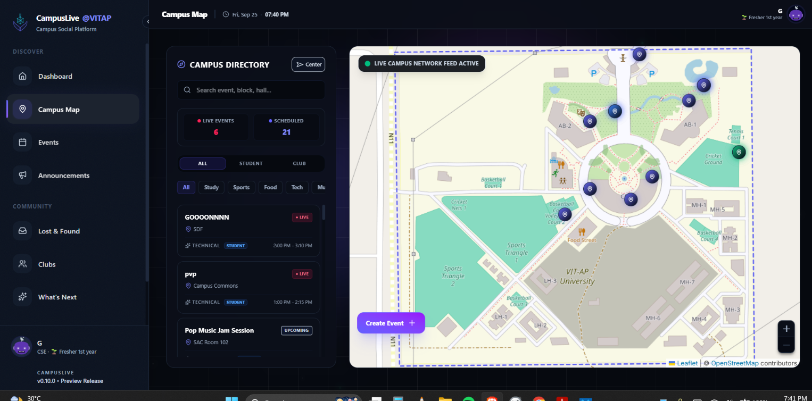

Find what’s happening nearby.
Interactive OpenStreetMap tiles, activity markers, search, and category filters connect events to places on campus.
CAMPUSLIVE @VITAP / 2026
A map-first campus social platform that brings events, communities, announcements, and Lost & Found into one shared experience.

THE PROBLEM
Events, student activities, and notices can become scattered across chat groups, servers, and notice boards. Finding something nearby often means knowing which group to ask.
CampusLive brings discovery onto a campus map. Students can see where activities are happening, explore the details, and choose what to join.
WHAT IT DOES
Interactive OpenStreetMap tiles, activity markers, search, and category filters connect events to places on campus.
Choose a map location, enter event details, and schedule a start and end time. Organizers can edit or delete their own activities.
Students can join and leave activities, view participant counts, and explore event details. Firestore listeners keep activity views synchronized.
Club directories, searchable announcements, and Lost & Found reports support the wider campus experience. Reports can be pinned to locations and marked resolved.
INSIDE THE APP
Screenshots from the app supplied by the creator. Open any screen to inspect it full size.





HOW IT WORKS
A map-first creation flow places the activity where it happens, with a marker preview before publication.
Event details, dates, and times are validated in the creation flow, then stored as an activity in Firestore.
Snapshot listeners update activity views. Joining and leaving update the participant array using Firestore’s array operations.
THE STACK
WHAT’S NEXT
The repository’s roadmap explores indoor navigation, personal calendar reminders, native mobile apps, push notifications, and expansion to other campuses.
These are future directions rather than claims about the current release. The current showcase focuses on the implemented map, activity, community, and Lost & Found experience.
EXPLORE CAMPUSLIVE